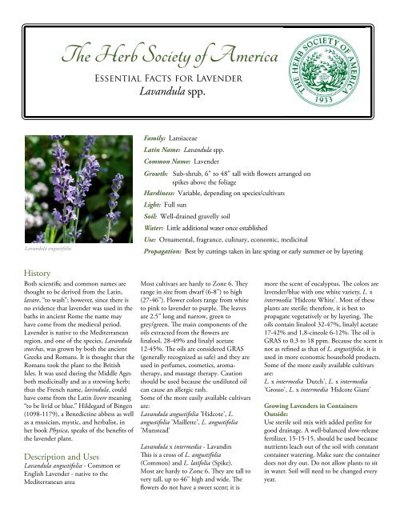

Lavanders are a plant wiht 47 known species, and is in the mints family, Lamiaceae. It is primarily found across the drier, warmer regions of mainland Eurasia, with an affinity for maritime breezes.There are many types off lavender, as you will see in this video:
Lanvenders symbolize love and devotion, as the soft purple colour lavender has often been associated to love and devotion, making it a great gift for showing love.
